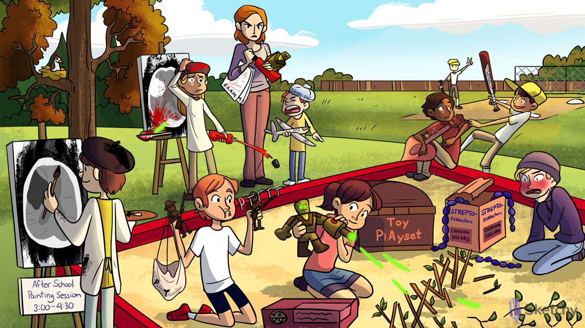

Mesh of sticks: fibrin clot
toy playset: -teplase suffix of recombinant forms of tPA (e.g. alteplase, reteplase, tenecteplase)
Strepto-kinectors: streptokinase (a fibrinolytic)
Purple sphere chain: streptokinase is synthesized by streptococci
Plasma general: plasminogen
Plasma general activation: plasminogen is converted to plasmin by TPA and streptokinase
Plasma beams destroying wall: plasmin degrades fibrin clots
Fibrinolytics prolong PT
Fibrinolytics prolong PTT
D-shaped twigs: D-dimer is a fibrin degradation product formed from clot lysis
Black paint stroke: IV fibrinolytics may be used in the setting of an ischemic stroke
Administer IV fibrinolytics within 3-4.5 hours of ischemic stroke symptoms
Bird’s nest on ischemic branch: IV fibrinolytics can be used for acute treatment of severe DVT and PE
Broken heart strings: fibrinolytics may be used in the acute management of MI
Corked bat: percutaneous coronary intervention (PCI) is the preferred reperfusion option in acute STEMI
Calling for 2: perform PCI ideally within 2 hours in setting of acute STEMI
Red paint stroke: hemorrhagic stroke is a side effect of fibrinolytic therapy
Traumatic plasma beam: recent head trauma is a contraindication for fibrinolytic therapy
Red palette knife: recent intracranial surgery is a contraindication for fibrinolytic therapy
High pressure paint tube: severe hypertension is a contraindication for fibrinolytic therapy
White area on CT indicates cerebral hemorrhage - a contraindication for fibrinolytic therapy
Choking hazard: streptokinase can cause allergic reaction and even anaphylaxis
Cap on paint tube: aminocaproic acid can be used to reverse fibrinolysis
Plasma general tucked under arm: aminocaproic acid competitively inhibits plasminogen activation
Exams: tranexamic acid can be used to reverse TPA
Fighter pilot: FFP can be used to reverse coagulopathy
Cryo ice pack: cryoprecipitate can be used to reverse coagulopathy